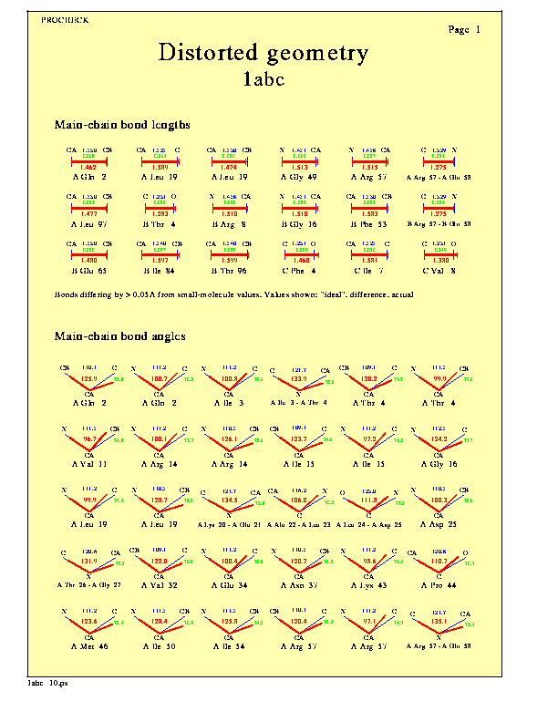

These plots shows all distorted main-chain bond lengths, main-chain bond angles, and planar groups.
For each main-chain bond length and angle plotted, the plot shows the ideal value (as defined by the Engh & Huber (1991) small-molecule data), the actual value, and the difference between the two.
For each distorted planar groups, three orthogonal projections are plotted and the value shown is the RMS distance of the atoms from the best-fit plane.
Reference
| Engh RA and Huber R (1991). Accurate bond and angle parameters for X-ray protein structure refinement. Acta Cryst., A47, 392-400. |